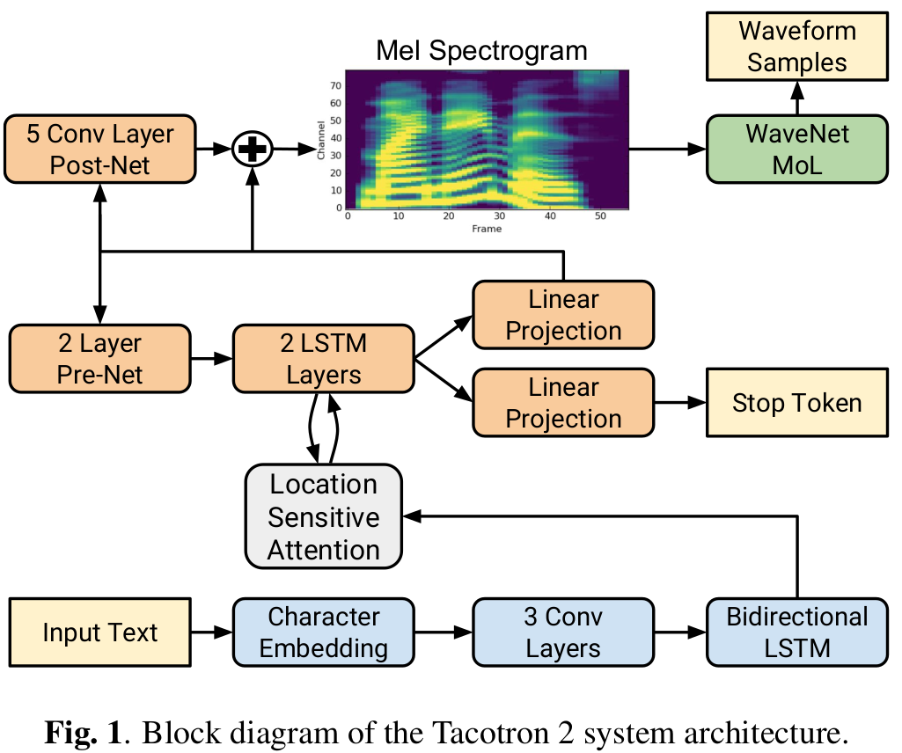
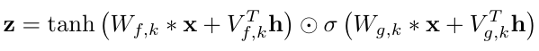
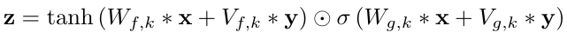

WaveNet and SampleRNN derivatives
Tacotron 2
Tacotron 2[1] is a neural network architecture for speech synthesis directly from text.
In the Text-To-Speech component of the model, there is a recurrent sequence-to-sequence feature prediction network that maps character embeddings to mel-scale spectrograms. In the vocoder component of the model, the resultant spectrograms are synthesized into time-domain waveforms using a WaveNet-based vocoder.
I chose this paper to describe because it combines the best of the spectral domain and neural audio synthesis in the waveform domain. It uses 50ms mel-spectrogram spectral features for representing structured features of speech (utterances, etc.) compactly, and uses WaveNet vocoders to synthesize the spectrograms to natural-sounding audio.
Advancements over Tacotron 1
The Tacotron 2 paper describes how Tacotron 1 vocoded magnitude spectrograms using the Griffin-Lim algorithm for phase estimation, followed by an inverse short-time Fourier transform:
Griffin-Lim produces characteristic artifacts and lower audio quality than approaches like WaveNet.
This is clear support for the idea that WaveNet is an advancement over the previous state of the art of spectral-based audio synthesis.
The Tacotron 2 block diagram shows the complexity of the model:

However, most of the complexity is in the TTS part of the model, which convert text into a sequence of mel-spectrograms. We're only really interested in very broad details, and the last stage of the model, which is the WaveNet vocoder in the top right.
mel spectrograms
Tacotron 2 encodes character sequences into features, which can be decoded into spectrograms:
mel spectrograms are computed through a short-time Fourier transform (STFT) using a 50 ms frame size, 12.5 ms frame hop, and a Hann window function. ... We transform the STFT magnitude to the mel scale using an 80 channel mel filterbank spanning 125 Hz to 7.6 kHz, followed by log dynamic range compression.
The spectrograms are then used as conditioning inputs to a WaveNet which mostly resembles the vanilla WaveNet we already saw, with some modifications to the stacked layers of dilated convolutions.
Code
There is an implementation of Tacotron 2 published by NVIDIA[2], which uses their own WaveGlow[3] (instead of WaveNet) as the vocoder. This indicates to me that the vocoder layer can be swapped out for any other waveform-generative model, e.g. SampleRNN, as long as its trained appropriately on mel spectrograms.
If we follow the link to NVIDIA's website announcing WaveGlowhttps://nv-adlr.github.io/WaveGlow, we can find the wavenet_vocoder project, which is WaveNet conditioned on mel spectrograms, i.e. the vocoder part of Tacotron 2.
How does the WaveNet Vocoder work
The codewavenet vocoder advertises a "focus on local and global conditioning of WaveNet, which is essential for vocoder." This follows from the last part of the WaveNet overview where I showed the theoretical implementation of global and local conditioning from the WaveNet paper. There are examples of both global conditioning (i.e. speaker id) and local conditioning (mel spectrogram, i.e. utterances) in their demo website.
In practise, what does it look like to condition WaveNet with mel spectrograms? In the model code, the local conditioning is set using cin_channels. In train.py, setting cin_channels > 0 (default: 80) (80 = typical number of frequency channels in the mel scale) enables local conditioning, and changes how training data is loaded:
def get_data_loaders(dump_root, speaker_id, test_shuffle=True):
data_loaders = {}
local_conditioning = hparams.cin_channels > 0
X = FileSourceDataset(
RawAudioDataSource(join(dump_root, phase), speaker_id=speaker_id,
max_steps=max_steps, cin_pad=hparams.cin_pad,
hop_size=audio.get_hop_size()))
if local_conditioning:
Mel = FileSourceDataset(
MelSpecDataSource(join(dump_root, phase), speaker_id=speaker_id,
max_steps=max_steps, cin_pad=hparams.cin_pad,
hop_size=audio.get_hop_size()))
assert len(X) == len(Mel)
print("Local conditioning enabled. Shape of a sample: {}.".format(
Mel[0].shape))
dataset = PyTorchDataset(X, Mel)
data_loader = data_utils.DataLoader(
dataset, batch_size=hparams.batch_size, drop_last=True,
num_workers=hparams.num_workers, sampler=sampler, shuffle=shuffle,
collate_fn=collate_fn, pin_memory=hparams.pin_memory)
Dataset are prepared from datasets/wavallin.py, which contains the code for loading a wav file and its associated mel spectrogram for WaveNet conditioning:
def _process_utterance(out_dir, index, wav_path, text):
# Load the audio to a numpy array:
wav = audio.load_wav(wav_path)
# trim silence, preprocess, etc.
# omitted
# Compute a mel-scale spectrogram from the trimmed wav:
# (N, D)
mel_spectrogram = audio.logmelspectrogram(wav).astype(np.float32).T
# Set waveform target (out)
if is_mulaw_quantize(hparams.input_type):
out = P.mulaw_quantize(wav, hparams.quantize_channels - 1)
elif is_mulaw(hparams.input_type):
out = P.mulaw(wav, hparams.quantize_channels - 1)
else:
out = wav
# Write the spectrograms to disk:
name = splitext(basename(wav_path))[0]
audio_filename = '%s-wave.npy' % (name)
mel_filename = '%s-feats.npy' % (name)
np.save(os.path.join(out_dir, audio_filename),
out.astype(out_dtype), allow_pickle=False)
np.save(os.path.join(out_dir, mel_filename),
mel_spectrogram.astype(np.float32), allow_pickle=False)
# Return a tuple describing this training example:
return (audio_filename, mel_filename, N, text)
Finally, we saw in the WaveNet paper that the global and local conditioning are implicated in the activation function inside the neural network:
Global:

Local:

In the code, we can see this in wavenet_vocoder/modules.py:
def _forward(self, x, c, g):
"""Forward
Args:
x (Tensor): B x C x T
c (Tensor): B x C x T, Local conditioning features
g (Tensor): B x C x T, Expanded global conditioning features
Returns:
Tensor: output
"""
residual = x
x = F.dropout(x, p=self.dropout, training=self.training)
a, b = x.split(x.size(splitdim) // 2, dim=splitdim)
# local conditioning
if c is not None:
assert self.conv1x1c is not None
c = _conv1x1_forward(self.conv1x1c, c)
ca, cb = c.split(c.size(splitdim) // 2, dim=splitdim)
a, b = a + ca, b + cb
# global conditioning
if g is not None:
assert self.conv1x1g is not None
g = _conv1x1_forward(self.conv1x1g, g)
ga, gb = g.split(g.size(splitdim) // 2, dim=splitdim)
a, b = a + ga, b + gb
x = torch.tanh(a) * torch.sigmoid(b)
# For skip connection
s = _conv1x1_forward(self.conv1x1_skip, x)
# For residual connection
x = _conv1x1_forward(self.conv1x1_out, x)
x = (x + residual) * math.sqrt(0.5)
return x, s
Notice that different convolutions are applied for local and global - self.conv1x1c and self.conv1x1g. Let's look at the difference:
self.conv1x1c = Conv1d1x1(cin_channels, gate_channels, bias=False)
self.conv1x1g = Conv1d1x1(gin_channels, gate_channels, bias=False)
A last thing to check is how to create an utterance based on an input of mel spectrograms? As per the author, synthesis.py is not working, but the usage should resemble:
$ python synthesis.py ${checkpoint_path} ${output_dir} --preset= --hparams="parameters you want to override"
Important options:
--conditional=: (Required for conditional WaveNet) Path of local conditional features (.npy).
This way, once we have a collection of mel spectrograms (output by the first half of Tacotron 2, for example), we would then use the synthesis.py script/code to create a wav file containing the utterance associated with that mel spectrogram.
How does Tacotron 2 use the WaveNet vocoder
The above inspected the standalone wavenet_vocoder project, but how does it look embedded inside the larger Tacotron 2 project?
We can find the reference to the WaveGlow vocoder (similar enough to WaveNet for our purposes) in the NVIDIA tacotron2 codebasenv tacotron2, in the file inference.ipynb. Since it's a Jupyter notebook, there's a visual ui in GitHubhttps://github.com/NVIDIA/tacotron2/blob/master/inference.ipynb:
Once the mel spectrogram is obtained from the Tacotron 2 model, they're passed to the WaveGlow "infer" function. We can find this in the WaveGlowwaveglow source code, in the file glow.py:
def infer(self, spect, sigma=1.0):
spect = self.upsample(spect)
audio = torch.autograd.Variable(sigma*audio)
for k in reversed(range(self.n_flows)):
n_half = int(audio.size(1)/2)
audio_0 = audio[:,:n_half,:]
audio_1 = audio[:,n_half:,:]
output = self.WN[k]((audio_0, spect))
The call self.WN[k]((audio_0, spect)) is invoking the self.forward method of a WN object (a WaveNet-like layer, as described in the code) higher up in the same file. Here we see the familiar insertion of the spectrogram conditioning inside the activation unit:
def forward(self, forward_input):
audio, spect = forward_input
audio = self.start(audio)
output = torch.zeros_like(audio)
n_channels_tensor = torch.IntTensor([self.n_channels])
spect = self.cond_layer(spect)
for i in range(self.n_layers):
spect_offset = i*2*self.n_channels
acts = fused_add_tanh_sigmoid_multiply(
self.in_layers[i](audio),
spect[:,spect_offset:spect_offset+2*self.n_channels,:],
n_channels_tensor)
res_skip_acts = self.res_skip_layers[i](acts)
if i < self.n_layers - 1:
audio = audio + res_skip_acts[:,:self.n_channels,:]
output = output + res_skip_acts[:,self.n_channels:,:]
else:
output = output + res_skip_acts
return self.end(output)
Char2Wav
Char2Wavchar2wav paper is included, for the purposes of this report, to show that SampleRNN can also be conditioned like WaveNet. The Char2Wav block diagram is as follows:
We see again that SampleRNN, just like WaveNet in Tacotron 2, is the last vocoder stage of this TTS system:
We use a conditional version of the same model (SampleRNN) to learn the mapping from a sequence of vocoder features to corresponding audio samples. Each vocoder feature frame is added as an extra bias to the corresponding state in the top tier. This allows the module to use the past audio samples and vocoder feature frames to generate the current audio samples.
Let's look at the code to find out how SampleRNN is conditioned.
Code
There is a referencechar2wav code https://github.com/sotelo/parrot codebase released, named "parrot". Parrot contains a custom version of conditioned SampleRNN in the path sampleRNN/models/conditional/three_tier.py.
Jukebox
Jukebox[4] solves a different problem of the waveform domain - that of the high dimensionality:
The key bottleneck is that modeling the raw audio directly introduces extremely long-range dependencies, making it computationally challenging to learn the high-level semantics of music. A way to reduce the difficulty is to learn a lower-dimensional encoding of the audio with the goal of losing the less important information but retaining most of the musical information.
At typical sampling rates (16kHz for speech, 44.1kHz for CD-quality music, 48Khz for digital music), there are thousands of samples needed to represent features (e.g. a word or note).
We introduce Jukebox, a model that generates music with singing in the raw audio domain. We tackle the long context of raw audio using a multi-scale VQ-VAE to compress it to discrete codes, and modeling those using autoregressive Transformers.
VQ-VAE
VQ-VAE[5] stands for Vector Quantized Variational Autoencoder. It seems like VQ-VAEs are an improvement over standard VAEs, which are neural network-based encoding/decoding scheme. So in a sense, Jukebox is using "mini neural networks" to encode the raw waveform into a more compact representation, and then applying WaveNet on the VQ-VAEs, or compressed space[6]:

Jukebox model
Jukebox applies the familiar WaveNet model except without respecting causality:
we use residual networks consisting of WaveNet-style non-causal 1-D dilated convolutions, interleaved with downsampling and upsampling 1-D convolutions to match different hop lengths.
Jukebox uses VQ-VAE WaveNets operating at 3 different tiers of temporal resolution:
This is very reminsicent of SampleRNN's 3 tiers of RNN operating at different temporal resolutions.
Reconstruction
Just like we saw the inverse spectral transform of Tacotron 1 suffering from low quality from the Griffin-Lim phase reconstruction phase, Jukebox suffers from its own reconstruction problems:
When using only the sample-level reconstruction loss, the model learns to reconstruct low frequencies only. To capture mid-to-high frequencies, we add a spectral loss which ... encourages the model to match the spectral components without paying attention to phase which is more difficult to learn.
Code
The reference code is here but the dadabots have began experimenting with it in their own fork - they probably have some interesting new ideas in the pipeline.